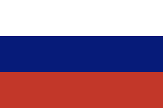
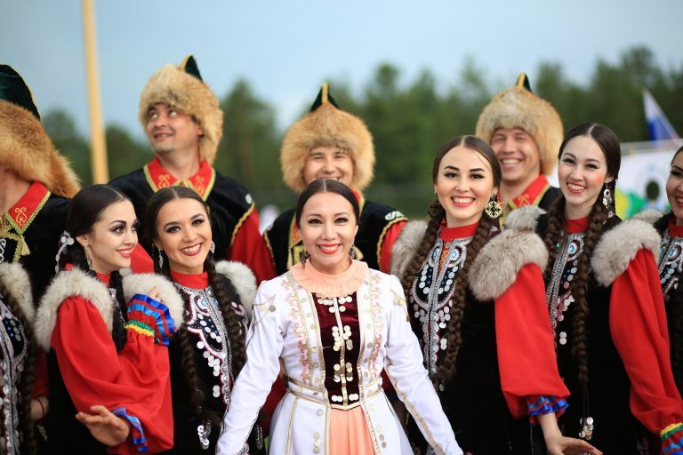

О событии дня: Год дружбы народов России

Основная идея тематического года - поддержка культурного диалога, развитие межнационального сотрудничества и сохранение традиционного наследия всех народов России. В рамках этой темы проходят просветительские акции, региональные фестивали и образовательные проекты.
Для изображений добавлены эффекты.

Символом года становится идея единства в многообразии: сохранение своей идентичности и уважение к культуре соседей. Такое взаимодействие укрепляет общественное согласие и формирует устойчивую гражданскую общность.